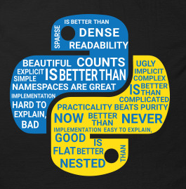

Decifrando o Zen do Python
Eis que buscando algum conjunto de dados dentro do Python, deparei-me com a verdade sobre o Zen do Python

Eu queria montar um arquivo CSV com dados interessantes de dentro do próprio Python, e fui fuçando algumas coisas, até que, por acaso, mandei um import this no console para ver se rolava criar um arquivo a partir do texto gerado por ele:
>>> import this
The Zen of Python, by Tim Peters
Beautiful is better than ugly.
Explicit is better than implicit.
Simple is better than complex.
Complex is better than complicated.
Flat is better than nested.
Sparse is better than dense.
Readability counts.
Special cases aren't special enough to break the rules.
Although practicality beats purity.
Errors should never pass silently.
Unless explicitly silenced.
In the face of ambiguity, refuse the temptation to guess.
There should be one-- and preferably only one --obvious way to do it.
Although that way may not be obvious at first unless you're Dutch.
Now is better than never.
Although never is often better than *right* now.
If the implementation is hard to explain, it's a bad idea.
If the implementation is easy to explain, it may be a good idea.
Namespaces are one honking great idea -- let's do more of those!
Mas como estava nessa vibe de curiosidade, pensei comigo: "como isso funciona, de onde vem esse texto"?
Um pouquinho de introspecção resolve muita coisa:
>>> this = __import__("this")
>>> dir(this)
['__builtins__', '__cached__', '__doc__', '__file__', '__loader__', '__name__', '__package__', '__spec__', 'c', 'd', 'i', 's']
Aquelas letras são suspeitas...
>>> this.c
97
>>> this.d
{'A': 'N', 'B': 'O', 'C': 'P', 'D': 'Q', 'E': 'R', 'F': 'S', 'G': 'T', 'H': 'U', 'I': 'V', 'J': 'W', 'K': 'X', 'L': 'Y', 'M': 'Z', 'N': 'A', 'O': 'B', 'P': 'C', 'Q': 'D', 'R': 'E', 'S': 'F', 'T': 'G', 'U': 'H', 'V': 'I', 'W': 'J', 'X': 'K', 'Y': 'L', 'Z': 'M', 'a': 'n', 'b': 'o', 'c': 'p', 'd': 'q', 'e': 'r', 'f': 's', 'g': 't', 'h': 'u', 'i': 'v', 'j': 'w', 'k': 'x', 'l': 'y', 'm': 'z', 'n': 'a', 'o': 'b', 'p': 'c', 'q': 'd', 'r': 'e', 's': 'f', 't': 'g', 'u': 'h', 'v': 'i', 'w': 'j', 'x': 'k', 'y': 'l', 'z': 'm'}
>>> this.i
25
>>> this.s
"Gur Mra bs Clguba, ol Gvz Crgref\n\nOrnhgvshy vf orggre guna htyl.\nRkcyvpvg vf orggre guna vzcyvpvg.\nFvzcyr vf orggre guna pbzcyrk.\nPbzcyrk vf orggre guna pbzcyvpngrq.\nSyng vf orggre guna arfgrq.\nFcnefr vf orggre guna qrafr.\nErnqnovyvgl pbhagf.\nFcrpvny pnfrf nera'g fcrpvny rabhtu gb oernx gur ehyrf.\nNygubhtu cenpgvpnyvgl orngf chevgl.\nReebef fubhyq arire cnff fvyragyl.\nHayrff rkcyvpvgyl fvyraprq.\nVa gur snpr bs nzovthvgl, ershfr gur grzcgngvba gb thrff.\nGurer fubhyq or bar-- naq cersrenoyl bayl bar --boivbhf jnl gb qb vg.\nNygubhtu gung jnl znl abg or boivbhf ng svefg hayrff lbh'er Qhgpu.\nAbj vf orggre guna arire.\nNygubhtu arire vf bsgra orggre guna *evtug* abj.\nVs gur vzcyrzragngvba vf uneq gb rkcynva, vg'f n onq vqrn.\nVs gur vzcyrzragngvba vf rnfl gb rkcynva, vg znl or n tbbq vqrn.\nAnzrfcnprf ner bar ubaxvat terng vqrn -- yrg'f qb zber bs gubfr!"
Perceba que o this.s tem várias quebras de linha (\n), e no começo duas (\n\n). três letras, três letras, duas letras, seis letras e uma vírgula, como no título do Zen. E do dicionário pode-se ver que é uma cifra, pois o Gur transforma-se em:
>>> this.d['G']
'T'
>>> this.d['u']
'h'
>>> this.d['r']
'e'
Uma primeira ideia (não foi de primeira, é claro que errei) para decifrar isso é com:
>>> print(''.join([this.d.get(x,x) for x in this.s]))
The Zen of Python, by Tim Peters
Beautiful is better than ugly.
Explicit is better than implicit.
Simple is better than complex.
Complex is better than complicated.
Flat is better than nested.
Sparse is better than dense.
Readability counts.
Special cases aren't special enough to break the rules.
Although practicality beats purity.
Errors should never pass silently.
Unless explicitly silenced.
In the face of ambiguity, refuse the temptation to guess.
There should be one-- and preferably only one --obvious way to do it.
Although that way may not be obvious at first unless you're Dutch.
Now is better than never.
Although never is often better than *right* now.
If the implementation is hard to explain, it's a bad idea.
If the implementation is easy to explain, it may be a good idea.
Namespaces are one honking great idea -- let's do more of those!
Mas qual a magia de, ao importar o módulo, ele imprimir algo na tela? A mais simples possível! E aqui apresento o código fonte do módulo this, que se encontra no arquivo cpython/Lib/this.py no código fonte do Python, nesse caso, na tag v3.10.0b1:
s = """Gur Mra bs Clguba, ol Gvz Crgref
Ornhgvshy vf orggre guna htyl.
Rkcyvpvg vf orggre guna vzcyvpvg.
Fvzcyr vf orggre guna pbzcyrk.
Pbzcyrk vf orggre guna pbzcyvpngrq.
Syng vf orggre guna arfgrq.
Fcnefr vf orggre guna qrafr.
Ernqnovyvgl pbhagf.
Fcrpvny pnfrf nera'g fcrpvny rabhtu gb oernx gur ehyrf.
Nygubhtu cenpgvpnyvgl orngf chevgl.
Reebef fubhyq arire cnff fvyragyl.
Hayrff rkcyvpvgyl fvyraprq.
Va gur snpr bs nzovthvgl, ershfr gur grzcgngvba gb thrff.
Gurer fubhyq or bar-- naq cersrenoyl bayl bar --boivbhf jnl gb qb vg.
Nygubhtu gung jnl znl abg or boivbhf ng svefg hayrff lbh'er Qhgpu.
Abj vf orggre guna arire.
Nygubhtu arire vf bsgra orggre guna *evtug* abj.
Vs gur vzcyrzragngvba vf uneq gb rkcynva, vg'f n onq vqrn.
Vs gur vzcyrzragngvba vf rnfl gb rkcynva, vg znl or n tbbq vqrn.
Anzrfcnprf ner bar ubaxvat terng vqrn -- yrg'f qb zber bs gubfr!"""
d = {}
for c in (65, 97):
for i in range(26):
d[chr(i+c)] = chr((i+13) % 26 + c)
print("".join([d.get(c, c) for c in s]))
O que explica aquelas variáveis com nome de uma letra só.
Aqui o link direto para a versão na branch main:
E leiam os comentários :)